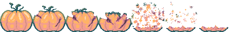

FrankenPatch

FrankenPatch is a top-down RPG C++ game originally created for the 2022 Cozy Autumn Game Jam on itch.io.
Play as a character that gets transported during a thunder storm to a pumpkin field in a
doctor's backyard where you are assailed by ... zombies?! Uncover the town mystery
and find your way home, if you can!
[ FrankenPatch itch.io page ]
[ 2022 Cozy Autumn Game Jam ]
After the Cozy Autumn Jam ended, development on FrankenPatch continued to turn it into a more fleshed out game.
The plan is to add an actual story-line and further implement more game engine features
like more sophisticated colission detection handling, rendering / shaders, music, and more cute pixel art!
The game engine is made in conjunction with SFML for I/O handling and rendering. Compilation is done statically so
players don't have to pull in any of the dependencies themselves. The version of SFML being used is SFML-2.6.1.
 There was an optional palette and an optional mechanic to adhere to for the Jam. For FrankenPatch I choose to use the
Autumn Glow color palette for all assets, but not the One Room restriction (although in the end the demo is just one
'room' anyway, so task failed successfully?). The game itself did not score very high due to
the chaotic nature of the demo (evade these 20 zombies while breaking 100 pumpkins AAAAA), but people did say
the graphics were very nice! The graphics were made using AseSprite and saved as png texture packs.
There was an optional palette and an optional mechanic to adhere to for the Jam. For FrankenPatch I choose to use the
Autumn Glow color palette for all assets, but not the One Room restriction (although in the end the demo is just one
'room' anyway, so task failed successfully?). The game itself did not score very high due to
the chaotic nature of the demo (evade these 20 zombies while breaking 100 pumpkins AAAAA), but people did say
the graphics were very nice! The graphics were made using AseSprite and saved as png texture packs.

Build system
The building of the FrankenPatch code is automated using Makefiles. To allow for static linking, the SFML-2.6.1 library
was first compiled from source and the following macro definitions were added to the C++ flags: '-static' and '-DSFML_STATIC'.
The first flag is to statically link the standard library into the executable, and the second one to signify for the SFML
library to do the same. Static linking is when you take the entirety of the code and absorb it into the final executable,
as opposed to dynamic linking, where you simply have a reference to the code that you will need. By linking statically you
remove dependency requirements (because they are compiled into the final program).
Makefile:
...
CXX = g++
CXXFLAGS = -std=c++17 \
-static \
-DSFML_STATIC \
-DDEBUG
#-mwindows
SFML = C:/Users/Roxanne/Documents/GAMES_/SFML
INCLUDE = -I$(SFML)/include -I$(INCLUDE_DIR)
LIB = -L$(SFML)-build/lib -L$(SFML)/extlibs/libs-mingw/x86 -L$(LIB_DIR) \
-lsfml-graphics-s \
-lsfml-window-s \
-lsfml-system-s \
-lsfml-main-s \
-lfreetype \
-lopengl32 \
-lwinmm \
-lgdi32 \
-lassets-s
...
Static linking has its pros and cons. Cons being that the size of your program will be much larger, and that if you need to
change anything in any of the pieces of code you will need to recompile the entire program again instead of just that one
thing. The main pro for me is that it compacts the code into one single point so you can ship one executable and it will just
work. I don't want to assume that every person has the required libraries pre-installed onto their computer.
To mitigate that problem they can be shipped seperately with the executable,
ofcourse, but this forces a rigid project structure where the program cannot be moved because it would mess up the dynamic
linking. Dynamic linking is also slower in terms of performance, because these libraries need to be loaded in during
runtime. I want to see how far I can go with the static linking; to see if I can really reduce FrankenPatch into one singular
executable containing all libraries, textures, music, etc.
The build environment for FrankenPatch is made to work with Windows 10 right now, although I want to eventually make
it work for Linux as well. If you want to compile for Linux it shouldn't be too hard. All code in FrankenPatch is
cross-platform. Just compile SFML for your platform (follow the 'how to statically link with SFML' guide on the SFML
website to see how to do that correctly) and change the Makefile. Setting it up can be a bit of a pain, but once you've
done it you can leave it be.
Image to Byte Array Converter
In my quest for static linking I wanted to try and encode my textures into the executable. To do so I wrote a program that
converts images into byte arrays. The program creates a header and a source file named after the image, puts in an extern
constant declaration for the byte array, and then defines it in the source file. The header file can then be included in
the FrankenPatch code so the SFML textures can load in the byte array instead of the image file on the disk. That way the
image gets completely absorbed into the code without any dependencies (the image file).
Output Header file:
#ifndef CHARACTER_TEXTURE_PACK_PNG_H
#define CHARACTER_TEXTURE_PACK_PNG_H
#include "stdint.h"
extern const unsigned int CHARACTER_TEXTURE_PACK_PNG_SIZE;
extern uint8_t CHARACTER_TEXTURE_PACK_PNG[];
#endif // CHARACTER_TEXTURE_PACK_PNG_H
Output Source file:
#include "character_texture_pack_png.hpp"
unsigned const int CHARACTER_TEXTURE_PACK_PNG_SIZE = 9241;
uint8_t CHARACTER_TEXTURE_PACK_PNG[] = {
137, 80, 78, 71, 13, 10, 26, 10, 0, 0, 0, 13, 73, 72, 68, 82, 0, 0, 0, 172,
0, 0, 3, 32, 8, 3, 0, 0, 0, 137, 117, 121, 212, 0, 0, 0, 1, 115, 82, 71,
...
63, 26, 114, 108, 13, 176, 70, 51, 151, 0, 0, 0, 0, 73, 69, 78, 68, 174, 66, 96,
130
};
The generated texture byte arrays are compiled and moved around using Makefiles. The header files
get send to the include folder; the static library / archive gets send to the lib folder. The FrankenPatch
code automatically includes it via its own Makefile. The same process can probably be repeated for sound files
as well.
